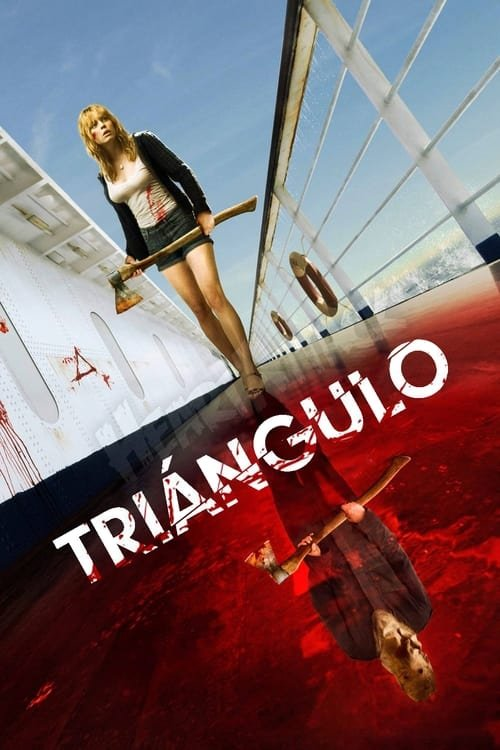

Triangle (2009)

Plataforma: Amazon Prime Video
Puntuación IMDb: 6.9/10
Duración: 1h 38m
Género: Thriller Psicológico, Sobrenatural
Sinopsis Rápida
Un grupo de amigos se encuentra atrapado en un misterioso barco fantasma. El tiempo se desdibuja, la realidad se distorsiona, y la locura se acerca rápidamente. ¿Podrán escapar de la pesadilla interminable?
Sinopsis Detallada
{{SINOPSIS_EXTENDIDA}}
¿Por qué tenés que verla?
- Una atmósfera de terror psicológico muy efectiva.
- Su trama cíclica y la constante sensación de incertidumbre.
- Una película que juega con la mente del espectador.
- Un final enigmático e intrigante.
Idea Extra
Análisis de los símbolos y su significado en el desarrollo de la trama.